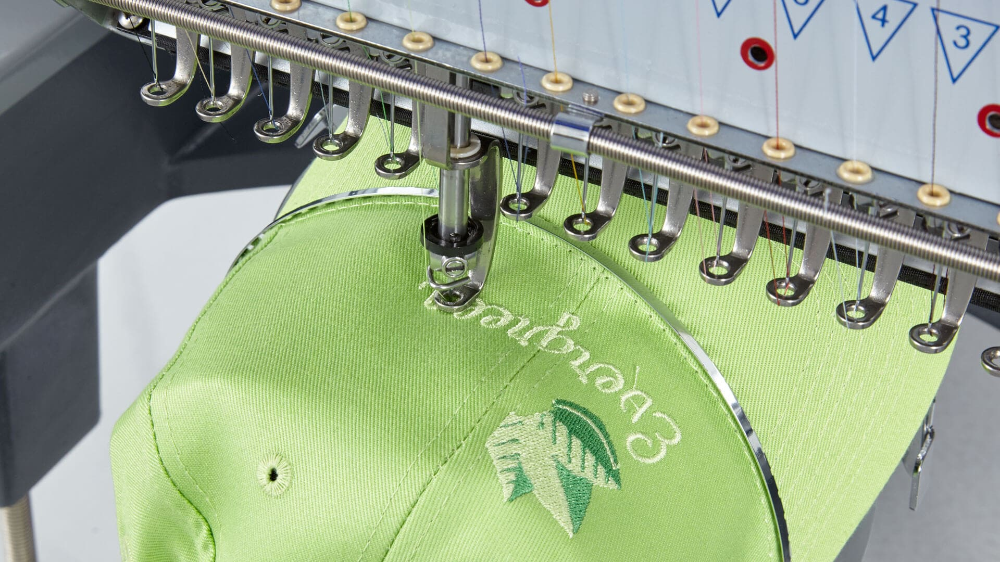

01
Stick auf Arbeits-/Alltagstextilien
Dein Firmenlogo, gestickt auf Arbeitskleidung, Poloshirts, Jacken oder Taschen. Sauber digitalisiert und über die gesamte Bestellung einheitlich umgesetzt.
Nadel & Zwirn startet am 1. Jänner 2027.
Hast du einen Zugangscode von uns erhalten?
Firmenlogos, Caps und Textilien, gestickt auf einer Maschine, mit einem einzigen Garn-Standard. Kein Massenprodukt, sondern eine Anfertigung für dich, gefertigt in Klagenfurt für Kunden in ganz Kärnten.
Firmenlogos, Caps und Textilien — drei Kernbereiche, jeder mit demselben Garn-Standard und derselben Sorgfalt gefertigt, egal ob ein einzelnes Stück oder eine größere Stückzahl bestellt wird.
Dein Firmenlogo, gestickt auf Arbeitskleidung, Poloshirts, Jacken oder Taschen. Sauber digitalisiert und über die gesamte Bestellung einheitlich umgesetzt.

Individuelle Stickerei auf Caps und Mützen, vom Einzelstück bis zur größeren Stückzahl fürs Team, den Verein oder die Veranstaltung.

Handtücher, Bademäntel und weitere Wellness-Textilien nach Wunsch bestickt, für Hotels, Wellness- und Beauty-Betriebe sowie private Anlässe wie Hochzeiten und Jubiläen.
Vier Grundsätze, an denen sich jeder Auftrag orientiert, unabhängig von Größe oder Stückzahl. Nadel & Zwirn e.U. ist ein Ein-Personen-Betrieb von Raphael Gritsch: kein Team, keine Zwischenhändler, sondern direkter Kontakt zwischen Gründer und Kunde.
Jeder Auftrag wird individuell digitalisiert und auf Größe, Stoff und Design abgestimmt. Keine Stangenware.
Gestickt wird ausschließlich mit Madeira Polyneon NE 40 auf einer Happy V2 Einzelkopf-Stickmaschine. Ein einziger Qualitätsstandard, für jeden Auftrag gleich, keine Billig-Alternativen.
Produziert in Klagenfurt, mit kurzen Wegen zu Kunden in ganz Kärnten. Made in Austria statt Massenware von weit her.
Persönliche Betreuung durch den Gründer selbst, von der ersten Anfrage bis zur Auslieferung.
Ausschnitte aus Werkstatt und Fertigung. Klick auf ein Bild für die Vollbildansicht.